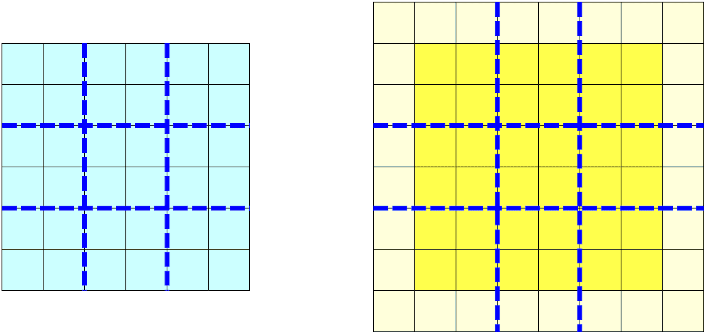

Domains and data parallelism
Local domains
We start this section by recalling the definition of a range in Chapel. A range is a 1D set of integer indices that can be bounded or infinite:
var a: range = 1..10; // 1, 2, 3, ..., 10
var x1 = 1234, x2 = 5678;
var b: range = x1..x2; // using variables
var c: range(strides=strideKind.positive) = 2..10 by 2;
writeln(c); // 2, 4, 6, 8, 10
var d = 2..10 by 2; // the same but skipping type description
var e = 1.. ; // unbounded rangeOn the other hand, domains are multi-dimensional (including 1D) sets of integer indices that are always bounded. To stress the difference between domain ranges and domains, domain definitions always enclose their indices in curly brackets. Ranges can be used to define a specific dimension of a domain:
var domain1to10: domain(1) = {1..10}; // 1D domain from 1 to 10 defined using the range 1..10
var twoDimensions: domain(2) = {-2..2, 0..2}; // 2D domain over a product of two ranges
var thirdDim: range = 1..16; // a range
var threeDims: domain(3) = {1..10, 5..10, thirdDim}; // 3D domain over a product of three ranges
write('cycle through all points in 2D: ');
for idx in twoDimensions do
write(idx, ', ');
writeln();
write('cycle using explicit tuples: ');
for (x,y) in twoDimensions { // can also cycle using explicit tuples (x,y)
write(x,",",y," ");
}
writeln();Let us define an \(n^2\) domain called mesh. It is defined by the single task in our code and is therefore defined in memory on the same node (locale 0) where this task is running. For each of \(n^2\) mesh points, let us print out:
m.locale.id= the ID of the locale holding that mesh point (should be 0)here.id= the ID of the locale on which the code is running (should be 0)here.maxTaskPar= the number of available cores (max parallelism with 1 task/core) (should be 3)
We already saw some of these variables / functions:
numLocales,Locales,here.id,here.name,here.numPUs(),here.physicalMemory(),here.maxTaskPar. {.note}
config const n = 8;
const mesh: domain(2) = {1..n, 1..n}; // a 2D domain defined in shared memory on a single locale
forall m in mesh do // go in parallel through all n^2 mesh points
writeln(m, ' ', m.locale.id, ' ', here.id, ' ', here.maxTaskPar);((7, 1), 0, 0, 2)
((1, 1), 0, 0, 2)
((7, 2), 0, 0, 2)
((1, 2), 0, 0, 2)
...
((6, 6), 0, 0, 2)
((6, 7), 0, 0, 2)
((6, 8), 0, 0, 2)Now we are going to learn two very important features of Chapel domains.
Feature 1: arrays on top of domains
Domains can be used to define arrays of variables of any type on top of them. For example, let us define an \(n^2\) array of real numbers on top of mesh:
config const n = 8;
const mesh: domain(2) = {1..n, 1..n}; // a 2D domain defined in shared memory on a single locale
var T: [mesh] real; // a 2D array of reals defined in shared memory on a single locale (mapped onto this domain)
forall t in T do // go in parallel through all n^2 elements of T
writeln(t, ' ', t.locale.id);$ chpl test.chpl -o test
$ sbatch distributed.sh
$ cat solution.out0.0 0
0.0 0
0.0 0
...
0.0 0
0.0 0
0.0 0By default, all \(n^2\) array elements are set to zero, and all of them are defined on the same locale as the underlying mesh. We can also cycle through all indices of T by accessing its domain:
forall idx in T.domain do
writeln(idx, ' ', T[idx]); // idx is a tuple (i,j); also print the corresponding array element(7, 1) 0.0
(1, 1) 0.0
(7, 2) 0.0
(1, 2) 0.0
...
(6, 6) 0.0
(6, 7) 0.0
(6, 8) 0.0Since we use a paralell forall loop, the print statements appear in a random runtime order.
We can also define multiple arrays on the same domain:
const grid = {1..100}; // 1D domain
const alpha = 5; // some number
var A, B, C: [grid] real; // local real-type arrays on this 1D domain
B = 2; C = 3;
forall (a,b,c) in zip(A,B,C) do // parallel loop
a = b + alpha*c; // simple example of data parallelism on a single locale
writeln(A);Feature 2: distributed domains
The second important property of Chapel domains is that they can span multiple locales (nodes).
Domains are fundamental Chapel concept for distributed-memory data parallelism.
Let us now define an \(n^2\) distributed (over several locales) domain distributedMesh mapped to locales in blocks. On top of this domain we define a 2D block-distributed array A of strings mapped to locales in exactly the same pattern as the underlying domain. Let us print out:
a.locale.id= the ID of the locale holding the element a of Ahere.name= the name of the locale on which the code is runninghere.maxTaskPar= the number of cores on the locale on which the code is running
Instead of printing these values to the screen, we will store this output inside each element of A as a string: a = int + string + int is a shortcut for a = int:string + string + int:string
use BlockDist; // use standard block distribution module to partition the domain into blocks
config const n = 8;
const mesh: domain(2) = {1..n, 1..n};
const distributedMesh: domain(2) dmapped new blockDist(boundingBox=mesh) = mesh;
var A: [distributedMesh] string; // block-distributed array mapped to locales
forall a in A { // go in parallel through all n^2 elements in A
// assign each array element on the locale that stores that index/element
a = a.locale.id:string + '-' + here.name[0..4] + '-' + here.maxTaskPar:string + ' ';
}
writeln(A);The syntax boundingBox=mesh tells the compiler that the outer edge of our decomposition coincides exactly with the outer edge of our domain. Alternatively, the outer decomposition layer could include an additional perimeter of ghost points if we specify the following:
const mesh: domain(2) = {1..n, 1..n};
const largerMesh: domain(2) dmapped new blockDist(boundingBox=mesh) = {0..n+1,0..n+1};
but let us not worry about this for now.
Running our code on 3 locales, with 2 cores per locale, produces the following output:
0-node1-2 0-node1-2 0-node1-2 0-node1-2 0-node1-2 0-node1-2 0-node1-2 0-node1-2
0-node1-2 0-node1-2 0-node1-2 0-node1-2 0-node1-2 0-node1-2 0-node1-2 0-node1-2
0-node1-2 0-node1-2 0-node1-2 0-node1-2 0-node1-2 0-node1-2 0-node1-2 0-node1-2
1-node2-2 1-node2-2 1-node2-2 1-node2-2 1-node2-2 1-node2-2 1-node2-2 1-node2-2
1-node2-2 1-node2-2 1-node2-2 1-node2-2 1-node2-2 1-node2-2 1-node2-2 1-node2-2
1-node2-2 1-node2-2 1-node2-2 1-node2-2 1-node2-2 1-node2-2 1-node2-2 1-node2-2
2-node3-2 2-node3-2 2-node3-2 2-node3-2 2-node3-2 2-node3-2 2-node3-2 2-node3-2
2-node3-2 2-node3-2 2-node3-2 2-node3-2 2-node3-2 2-node3-2 2-node3-2 2-node3-2If we were to run it on 4 locales, with 2 cores per locale, we might see something like this:
0-node1-2 0-node1-2 0-node1-2 0-node1-2 1-node2-2 1-node2-2 1-node2-2 1-node2-2 0-node1-2 0-node1-2 0-node1-2 0-node1-2 1-node2-2 1-node2-2 1-node2-2 1-node2-2 0-node1-2 0-node1-2 0-node1-2 0-node1-2 1-node2-2 1-node2-2 1-node2-2 1-node2-2 0-node1-2 0-node1-2 0-node1-2 0-node1-2 1-node2-2 1-node2-2 1-node2-2 1-node2-2 2-node4-2 2-node4-2 2-node4-2 2-node4-2 3-node3-2 3-node3-2 3-node3-2 3-node3-2 2-node4-2 2-node4-2 2-node4-2 2-node4-2 3-node3-2 3-node3-2 3-node3-2 3-node3-2 2-node4-2 2-node4-2 2-node4-2 2-node4-2 3-node3-2 3-node3-2 3-node3-2 3-node3-2 2-node4-2 2-node4-2 2-node4-2 2-node4-2 3-node3-2 3-node3-2 3-node3-2 3-node3-2{.note}
As we see, the domain distributedMesh (along with the string array A on top of it) was decomposed into 3x1 blocks stored on the three nodes, respectively. Equally important, for each element a of the array, the line of code filling in that element ran on the same locale where that element was stored. In other words, this code ran via the parallel forall loop on 3 nodes, using up to 2 cores on each node (or whatever you specified) to fill in the corresponding array elements. Once the parallel loop is finished, the last command writeln(A) runs on locale 0 gathering remote elements from the other locales and printing them to standard output.
Now we can print the range of indices for each sub-domain by adding the following to our code:
for loc in Locales do
on loc do
writeln(A.localSubdomain());On 3 locales we should get:
{1..3, 1..8}
{4..6, 1..8}
{7..8, 1..8}Let us count the number of threads by adding the following to our code:
var count = 0;
forall a in A with (+ reduce count) { // go in parallel through all n^2 elements
count = 1;
}
writeln("actual number of threads = ", count);If our n=8 is sufficiently large, there are probably enough array elements per node (\(8*8/3\approx 21\) in our case) to fully utilize the two available cores on each node, so our output might be:
$ chpl test.chpl -o test
$ sbatch distributed.sh
$ cat solution.outactual number of threads = 6Try reducing the array size n to see if that changes the output (fewer threads per locale), e.g., setting n=3. Also try increasing the array size to n=20 and study the output. Does the output make sense?
So far we looked at the block distribution BlockDist. It will distribute a 2D domain among nodes either using 1D or 2D decomposition (in our example it was 2D decomposition 2x2), depending on the domain size and the number of nodes.
Let us take a look at another standard module for domain partitioning onto locales, called CyclicDist. For each element of the array we will print out again
a.locale.id= the ID of the locale holding the element a of Ahere.name= the name of the locale on which the code is runninghere.maxTaskPar= the number of cores on the locale on which the code is running
use CyclicDist; // elements are sent to locales in a round-robin pattern
config const n = 8;
const mesh: domain(2) = {1..n, 1..n}; // a 2D domain defined in shared memory on a single locale
const m2: domain(2) dmapped new cyclicDist(startIdx=mesh.low) = mesh; // mesh.low is the first index (1,1)
var A2: [m2] string;
forall a in A2 {
a = a.locale.id:string + '-' + here.name[0..4]:string + '-' + here.maxTaskPar:string + ' ';
}
writeln(A2);$ chpl -o test test.chpl
$ sbatch distributed.sh
$ cat solution.out0-node1-2 0-node1-2 0-node1-2 0-node1-2 0-node1-2 0-node1-2 0-node1-2 0-node1-2
1-node2-2 1-node2-2 1-node2-2 1-node2-2 1-node2-2 1-node2-2 1-node2-2 1-node2-2
2-node3-2 2-node3-2 2-node3-2 2-node3-2 2-node3-2 2-node3-2 2-node3-2 2-node3-2
0-node1-2 0-node1-2 0-node1-2 0-node1-2 0-node1-2 0-node1-2 0-node1-2 0-node1-2
1-node2-2 1-node2-2 1-node2-2 1-node2-2 1-node2-2 1-node2-2 1-node2-2 1-node2-2
2-node3-2 2-node3-2 2-node3-2 2-node3-2 2-node3-2 2-node3-2 2-node3-2 2-node3-2
0-node1-2 0-node1-2 0-node1-2 0-node1-2 0-node1-2 0-node1-2 0-node1-2 0-node1-2
1-node2-2 1-node2-2 1-node2-2 1-node2-2 1-node2-2 1-node2-2 1-node2-2 1-node2-2With 4 locales, we might see something like this:
0-node1-2 1-node4-2 0-node1-2 1-node4-2 0-node1-2 1-node4-2 0-node1-2 1-node4-2__ 2-node2-2 3-node3-2 2-node2-2 3-node3-2 2-node2-2 3-node3-2 2-node2-2 3-node3-2__ 0-node1-2 1-node4-2 0-node1-2 1-node4-2 0-node1-2 1-node4-2 0-node1-2 1-node4-2__ 2-node2-2 3-node3-2 2-node2-2 3-node3-2 2-node2-2 3-node3-2 2-node2-2 3-node3-2__ 0-node1-2 1-node4-2 0-node1-2 1-node4-2 0-node1-2 1-node4-2 0-node1-2 1-node4-2__ 2-node2-2 3-node3-2 2-node2-2 3-node3-2 2-node2-2 3-node3-2 2-node2-2 3-node3-2__ 0-node1-2 1-node4-2 0-node1-2 1-node4-2 0-node1-2 1-node4-2 0-node1-2 1-node4-2__ 2-node2-2 3-node3-2 2-node2-2 3-node3-2 2-node2-2 3-node3-2 2-node2-2 3-node3-2__{.note}
As the name CyclicDist suggests, the domain was mapped to locales in a cyclic, round-robin pattern. We can also print the range of indices for each sub-domain by adding the following to our code:
for loc in Locales do
on loc do
writeln(A2.localSubdomain());{1..8 by 3, 1..8}
{1..8 by 3 align 2, 1..8}
{1..8 by 3 align 0, 1..8}In addition to BlockDist and CyclicDist, Chapel has several other predefined distributions: BlockCycDist, ReplicatedDist, DimensionalDist2D, ReplicatedDim, BlockCycDim, and StencilDist – for details please see Chapel’s documentation on distributions. I would particularly advise to check out StencilDist which is an enhanced variant of the blockDist distribution: it reduces the amount of communication necessary for array accesses across locale boundaries on a grid.